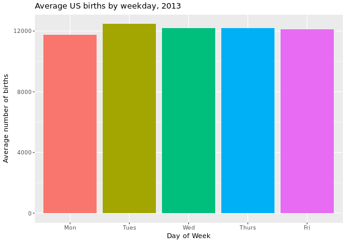

Further Tasks
The tasks below should be answered by creating your own .R script file (hence no inbuilt R consoles are included below). Start by opening RStudio from the "Maths-Stats" folder on your desktop and then create a new R script by going to File -> New File -> R Script. Save this file as DAWeek2.R in your personal drive, either M: or K: - (NB. DO NOT save it to the H: drive). The first step is to load into R all of the libraries you will need. This can be done by typing (or copying and pasting!) the following into your R script:
library(dplyr)
library(tidyr)
library(ggplot2)
library(nycflights13)
library(readr)
library(knitr)
library(fivethirtyeight)
library(stringr)The libraries can be loaded into R by highlighting them in your script and then clicking on the Run button located in the top right of the script window.
Task 1
In this task we will work with the data set analysed and reported in the 2016 article from FiveThirtyEight.com entitled "Some People Are Too Superstitious To Have A Baby On Friday The 13th" here.
The data set is called US_births_2000_2014 and is in the fivethirtyeight package.
Create an object called
US_births_2013which focuses only on data corresponding to 2013 births.By only choosing births data for the years 2010, 2011, 2012, and 2014 create a new data frame called
US_births_smalland check that this resulting data frame has 1461 rows. Note that there are many different ways to do this, but try and come up with three different ways using:- the "or" operator
| - the
%in%operator - the "not" operator
!
or combinations of them.
- the "or" operator
Suppose we are interested in choosing rows for only weekdays (not Saturdays or Sundays) for
day_of_weekin year 2013. Write the code to do so and give the nameUS_births_weekdays_2013to the resulting data frame. (Note that you may want to runUS_births_2000_2014 %>% distinct(day_of_week)to identify the specific values ofday_of_week.)Using what you covered in Week 1: Visualization, produce an appropriate plot looking at the pattern of births on all weekdays in 2013 coloured by the particular day of the week. (Remember to load the package
ggplot2).The plot in the previous task has shown there are some outliers in the data for US births on weekdays in 2013. We can use the summarize function to get an idea for how these outliers may affect the shape of the births variable in
US_births_weekdays_2013. Write some code to calculate the mean and median values for all weekday birth totals in 2013. Store this aggregated data in the data framebirth_summ. What do these values suggest about the effects of the outliers?Instead of looking at the overall mean and median across all of 2013 weekdays, calculate the mean and median for each of the five different weekdays throughout 2013. Using the same names for the columns as in the
birth_summdata frame in the previous exercise, create a new data frame calledbirth_day_summ.Using the aggregated data in the
birth_day_summ dataframe, produce this barplot.

Task 2 In this task we will work with the data set analysed and reported in the 2014 article from FiveThirtyEight.com entitled "41 Percent Of Fliers Think You're Rude If You Recline Your Seat" here.
The data set is called flying and is in the fivethirtyeight package.
- Write code to determine the proportion of respondents in the survey that responded with "Very" when asked if a passenger reclining their seat was rude. You should determine this proportion across the different levels of
ageandgenderresulting in a data frame of size 8 x 3. Assign the nameprop_veryto this calculated proportion in this aggregated data frame.
We can obtain proportions using the mean() function applied to logical values. For example suppose we want to count the proportion of "heads" in five tosses of a fair coin. If the results of the five tosses are stored in
tosses <- c("heads", "tails", "tails", "heads", "heads")
then we can use mean(tosses == "heads") to get the resulting answer of 0.6.
Including the function na.omit(TRUE) in the 'pipe' (%>%) removes all entries that are not complete whereas including the argument na.rm=TRUE in the mean() function removes just those entries where the relevant variable value is missing.
- Using the aggregated data you've created, produce two bar plots (one stacked, the other side-by-side) to show the differences between the sexes of the proportion of people who believe reclining your seat is 'very' rude, within each age group.
What stands out to you as you review these proportions?
What gender and age-range pairings have the highest and lowest proportions of thinking reclining airline seats are very rude in this survey?
R code to perform these Further Tasks will be available on Moodle from the end of the Lab Session.